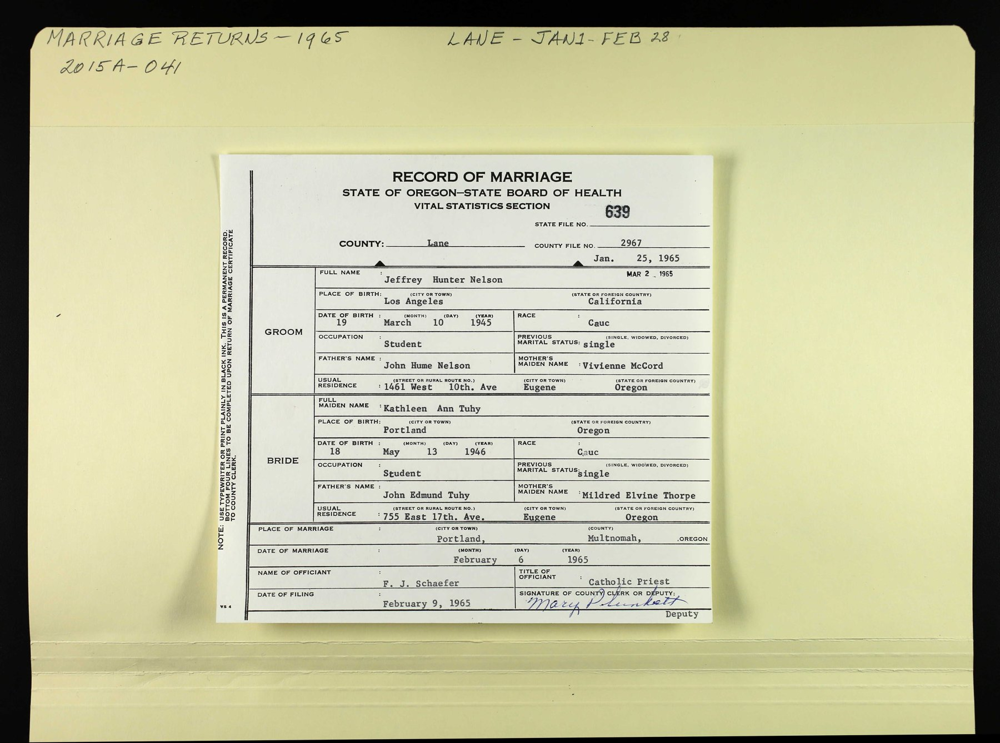

Jeff Nelson
Great-uncle of Genevieve Elisa Symanski Nelson, wife of Peter.
Living. As for every living relative on this site, the birth date is given by year only, and no current address is shown.
Jeff Nelson is the son of John Nelson and Vivian McCord2,3,4.
Family
- Parents
- John Nelson and Vivian McCord documented
Life events
| Event | Date | Place and details |
|---|---|---|
| Married | 6 Feb 1965 | Portland, Multnomah County, Oregon, United States1 |
Records

Sources
- Oregon Record of Marriage, Jeffrey Hunter Nelson and Kathleen Ann Tuhy, 6 February 1965 (State File No. 639, Lane County File No. 2967).
RECORD OF MARRIAGE | STATE OF OREGON–STATE BOARD OF HEALTH | STATE FILE NO. 639 | COUNTY: Lane | COUNTY FILE NO. 2967 | GROOM: Jeffrey Hunter Nelson | PLACE OF BIRTH: Los Angeles | California | DATE OF BIRTH: 19 | 1945 | RACE: Cauc | OCCUPATION: Student | PREVIOUS MARITAL STATUS: single | FATHER'S NAME: John Hume Nelson | MOTHER'S MAIDEN NAME: Vivienne McCord | USUAL RESIDENCE: [address omitted] | Eugene | Oregon | BRIDE: Kathleen Ann Tuhy | PLACE OF BIRTH: Portland | Oregon | DATE OF BIRTH: 18 | 1946 | FATHER'S NAME: John Edmund Tuhy | MOTHER'S MAIDEN NAME: Mildred Elvine Thorpe | USUAL RESIDENCE: [address omitted] | Eugene | Oregon | PLACE OF MARRIAGE: Portland, | Multnomah, OREGON | DATE OF MARRIAGE: February 6 1965 | NAME OF OFFICIANT: F. J. Schaefer | Catholic Priest
Oregon State Board of Health Record of Marriage (State File No. 639, Lane County File No. 2967, license issued 25 Jan 1965, filed 9 Feb 1965): Groom Jeffrey Hunter Nelson, age 19, born 1945 in Los Angeles, California, Caucasian, student, single, son of John Hume Nelson and Vivienne McCord, usual residence [address omitted], married on 6 February 1965 in Portland, Multnomah County, Oregon (by F. J. Schaefer, Catholic Priest) to Kathleen Ann Tuhy, age 18, born 1946 in Portland, Oregon, Caucasian, student, single, daughter of John Edmund Tuhy and Mildred Elvine Thorpe, usual residence [address omitted], Eugene, Oregon.
- Peter's tree, danenberg.sql, 2007–2015, parentages 79.
- Household of John H Nelson and Vivianne M Nelson, Burbank, Los Angeles, California, 1950 US Census.
Name: James M Nelson | Age: 8 | Birth Date: abt 1942 [abt 1942] | Gender: [address omitted]le | Race: White | Birth Place: California | [address omitted]rital Status: Never [address omitted]rried (Single) | Relation to Head of House: Son | Residence Date: 1950 | Home in 1950: Burbank, Los Angeles, California, USA | Street Name: [address omitted] | House Number: [address omitted] | Apartment Number: [address omitted] | Dwelling Number: 193 | Farm: No | Acres: No || Household: John H Nelson 39 Head; Vivianne M Nelson 38 Wife; Judith A Nelson 10 Daughter; James M Nelson 8 Son; Jeffrey H Nelson 5 Son
father: John Nelson; mother: Vivian McCord
- Oregon State Marriages parent entry for Jeffrey Hunter Nelson (John Hume Nelson & Vivienne McCord, File 1120934), File Number 1120934.
Name: John Hume Nelson | Gender: Male | Spouse: Vivienne McCord | Child: Jeffrey Hunter Nelson | File Number: 1120934
father: John Nelson; mother: Vivian McCord